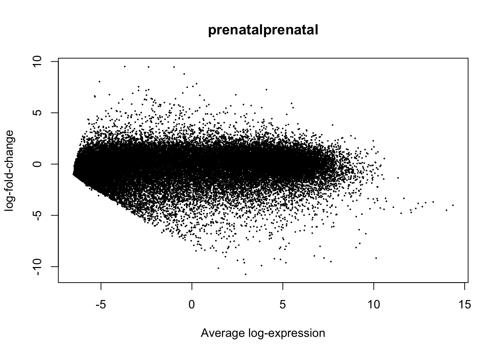

5.4 Expresión diferencial
Primero que nada, definamos nuestro modelo estadístico. Típicamente, exploraríamos más los datos para revisar que no haya otros problemas con las muestras y para explorar la relación entre nuestras variables.
library("ggplot2")
ggplot(as.data.frame(colData(rse_gene_SRP045638)), aes(y = assigned_gene_prop, x = prenatal)) +
geom_boxplot() +
theme_bw(base_size = 20) +
ylab("Assigned Gene Prop") +
xlab("Age Group") Por ejemplo, usando el paquete de
Por ejemplo, usando el paquete de variancePartition y scater entre otros tal como exploramos en el siguiente video del club de R de LIBD (notes in English)/
Por ahora continuaremos con el siguiente modelo estadístico.
mod <- model.matrix(~ prenatal + sra_attribute.RIN + sra_attribute.sex + assigned_gene_prop,
data = colData(rse_gene_SRP045638)
)
# Acordarme que era cada uno de los coeficientes
# Cuales son las variables que estamos evaluando además de cual no es el nivel de referencia. El que no es es el male, el que no es es el prenatal
colnames(mod)## [1] "(Intercept)" "prenatalprenatal" "sra_attribute.RIN" "sra_attribute.sexmale"
## [5] "assigned_gene_prop"Ya teniendo el modelo estadístico, podemos usar limma para realizar el análisis de expresión diferencial como tal.
- Existen varios modelos estadísticos para el análisis de expresión diferencial
- Usamos lima que se desarrolló en la era de los microarreglos
- implement amodelos de regresión lineal que permite velocidad y estabilidad
- Mejores estimados de la desviación estandar de los estimados para cada gen
- valores t más estables que se convierten en valores p
- Método voom permite usar lima para datos de expresión de RNAseq
- podemos usar directamente el paquete de EdgeR ya normalizado y nuestro modelo
Volcano plot y ma plot son gráficos básicos d
# version mas eficiente
eb_results <- eBayes(lmFit(vGene))
# tabla con los coeficinetes, valor t , valor p, tenemos que decirle cual es el coeficiente basado en el modelo que nos interesa, intentaremos acomodar nuestro modelo de tal forma que sea la columna 2 el coeficiente que nos interesa
de_results <- topTable(
eb_results,
coef = 2,
number = nrow(rse_gene_SRP045638),
# que no ordene los resultados
sort.by = "none"
)
# logFC es el coeficiente de interés
# mayor expresión en el numerador será positivo el LogFC
# la dirección del logFC concuerda con la dirección del valor p
# identical(sign(de_results$locFc), sign(de_result$t))
dim(de_results)## [1] 46932 16## source type score phase gene_id gene_type gene_name level
## ENSG00000223972.5 HAVANA gene 1735 NA ENSG00000223972.5 transcribed_unprocessed_pseudogene DDX11L1 2
## ENSG00000278267.1 ENSEMBL gene 68 NA ENSG00000278267.1 miRNA MIR6859-1 3
## ENSG00000227232.5 HAVANA gene 1351 NA ENSG00000227232.5 unprocessed_pseudogene WASH7P 2
## ENSG00000284332.1 ENSEMBL gene 138 NA ENSG00000284332.1 miRNA MIR1302-2 3
## ENSG00000243485.5 HAVANA gene 1021 NA ENSG00000243485.5 lincRNA MIR1302-2HG 2
## ENSG00000237613.2 HAVANA gene 1219 NA ENSG00000237613.2 lincRNA FAM138A 2
## havana_gene tag logFC AveExpr t P.Value adj.P.Val B
## ENSG00000223972.5 OTTHUMG00000000961.2 <NA> -0.4464473 -3.4480071 -1.616387 1.108073e-01 1.399351e-01 -5.5871402
## ENSG00000278267.1 <NA> <NA> 1.1238124 -1.3154875 6.175776 4.669176e-08 1.730504e-07 7.9671608
## ENSG00000227232.5 OTTHUMG00000000958.1 <NA> 0.6932616 3.6372886 5.723387 2.807302e-07 9.348513e-07 5.8016259
## ENSG00000284332.1 <NA> <NA> 0.4646765 -5.7349490 1.467797 1.469350e-01 1.811388e-01 -5.7535500
## ENSG00000243485.5 OTTHUMG00000000959.2 ncRNA_host 0.9705984 -0.6684675 5.110633 2.985939e-06 8.551661e-06 3.8413461
## ENSG00000237613.2 OTTHUMG00000000960.1 <NA> -1.5393441 -5.3057586 -4.169751 9.126976e-05 1.967694e-04 0.8591194## Genes diferencialmente expresados entre pre y post natal con FDR < 5%
# FDR= BH por el nombre de los autores
# puedes fijarte en el top 50 con el FDR más chiquitos si fueran muchos pero generalmente salen muy poquitos
table(de_results$adj.P.Val < 0.05)##
## FALSE TRUE
## 12898 34034## Visualicemos los resultados estadísticos
# valores positivos dicen que son mas altos en postnatal, valores negativos dice que son mas expresados en prenatal
plotMA(eb_results, coef = 2)
# volcanoplot muesta en el eje y el valor p pero convertido a -log 10 de tal forma que valores más exremos son valores más chicos del valor p original
#
volcanoplot(eb_results, coef = 2, highlight = 3, names = de_results$gene_name)# que reslate los 3 genes de mayor señal
de_results[de_results$gene_name %in% c("ZSCAN2", "VASH2", "KIAA0922"), ]## source type score phase gene_id gene_type gene_name level havana_gene tag
## ENSG00000143494.15 HAVANA gene 9086 NA ENSG00000143494.15 protein_coding VASH2 2 OTTHUMG00000036925.5 <NA>
## ENSG00000176371.13 HAVANA gene 4878 NA ENSG00000176371.13 protein_coding ZSCAN2 1 OTTHUMG00000074027.5 <NA>
## ENSG00000121210.15 HAVANA gene 6393 NA ENSG00000121210.15 protein_coding KIAA0922 2 OTTHUMG00000153244.5 <NA>
## logFC AveExpr t P.Value adj.P.Val B
## ENSG00000143494.15 5.451644 1.873147 37.90413 2.394912e-46 5.619900e-42 95.16926
## ENSG00000176371.13 2.742707 2.747266 36.79465 1.543986e-45 2.415411e-41 93.31745
## ENSG00000121210.15 3.290165 2.941427 42.25191 2.535399e-49 1.189913e-44 101.80839